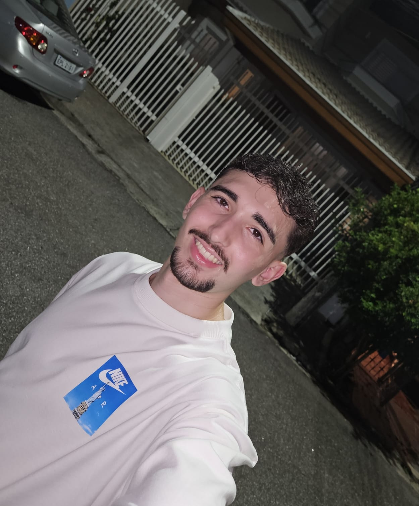

Olá, eu sou o Marcus
Estudante de Desenvolvimento de Software
Estou construindo minha base na programação para entrar no mercado de trabalho. Aqui você encontra um pouco sobre mim e os projetos que já fiz.
Ver projetos GitHub LinkedIn
Sobre mim
Me chamo Marcus Vinícius Carniello Leão e estudo Desenvolvimento de Software na Fatec Jessen Vidal, em São José dos Campos. Entrei no curso sem nenhuma experiência em programação e, desde o primeiro semestre, meu objetivo é estar pronto para o mercado de trabalho.
Meus objetivos são aprender cada vez mais, ganhar experiência e conquistar uma oportunidade no mercado de trabalho.
2
Projetos
Fatec
Graduação
2026
Início do curso
Tecnologias
Backend
Banco de dados
Frontend
Dados e desenvolvimento
Projetos
Vetor Imóveis
Site imobiliário feito para venda e locação de imóveis, desenvolvido com HTML e CSS.
Negado pelo Banco
Crédito inclusivo com dados do Banco Central do Brasil. Projeto da disciplina de Aprendizagem por Projetos Integrados (API) do 1º semestre do curso, desenvolvido pela equipe Time00.dev. Ele transforma dados públicos do Banco Central em informações que ajudam a identificar oportunidades de crédito de forma mais inclusiva, usando indicadores como volume de crédito, inadimplência, endividamento e crescimento da carteira para calcular um Score de Oportunidade por região.
Formação
Desenvolvimento de Software
Fatec Jessen Vidal · São José dos Campos
Curso focado em preparar para o mercado de trabalho, com projetos práticos a cada semestre.
Contato
Quer conversar sobre código ou oportunidades? Fale comigo:
E-mail: marcuscarniello7@gmail.com
LinkedIn GitHub